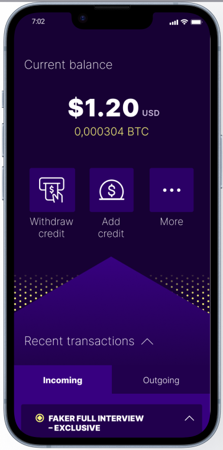
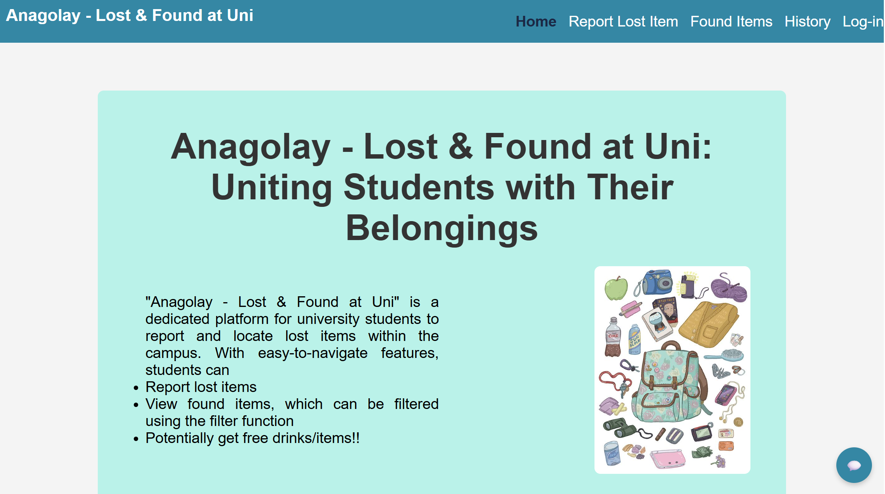

Computer Science | Developer | GitHub
I am a Computer Science student with experience across software development, data analysis, and applied research. My work spans full‑stack applications, algorithmic problem solving, and technical projects developed during hackathons and collaborative research programmes. I enjoy building solutions that are both technically robust and user‑centric, and I have hands‑on experience with Python, JavaScript, React, and backend services such as Firebase.
GivaBit is a blockchain-based content monetization platform on the Avalanche C-Chain. I built the GivaBit Server, which creates and manages payment-gated links through smart contract interactions and an SQLite registry. It supports secure link creation, short-code generation, and essential lifecycle operations such as access handling and link-status updates.
Developed during Minerva’s Hack, this platform combines OpenCV-based image recognition, NLTK-powered natural language processing, Cloud Firestore, and Google Maps API to match lost items with reported findings. The project was shortlisted as one of the top four solutions out of twelve teams, recognised for its practical design and technical execution.
Email: athenachong22@gmail.com
LinkedIn: linkedin.com/in/athena-chong/